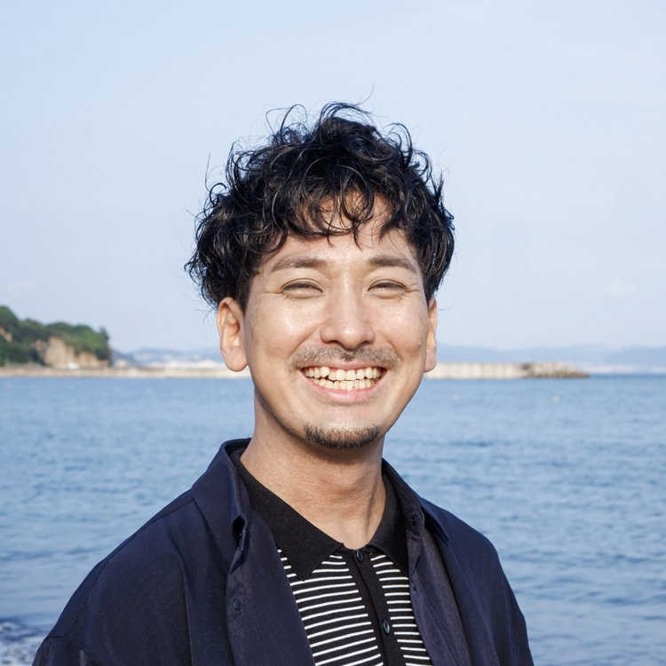

企画同行者
-

恩田 倫孝
（みっちー） 株式会社TABIPPO 取締役／
株式会社コオドリ 代表新潟県出身。
商社に 勤めた あと、 1年間の 世界一周を 経て、 2014年から TABIPPOに 参画。 POOLOの 前身と なる 「旅大学」を 立ち上げ、 累計700回の イベントを 企画・ 運営してきました。 2019年に POOLOを 立ち上げ、 2024年には 旅と 教育の 会社コオドリを 創業。 渡航国数は51。 今回の 旅を 企画しました。 -

清水 直哉
（しみなお） 株式会社TABIPPO 代表取締役
1988年、
群馬県生まれ。 21歳で 世界一周の 旅に 出て、 22歳で 仲間と TABIPPOを 設立。 新卒で 入った 広告代理店で 新規事業の 立ち上げを 経験した あと、 26歳で 株式会社TABIPPOを 創業しました。 旅を 軸に、 WEBメディア、 野外フェス、 出版、 スクール、 観光の マーケティング支援などの 事業を つくっています。 やさしい ローカルマガジン 「たずね」の 琴平編では、 町の方々との 座談会で 聞き手を 務めました。